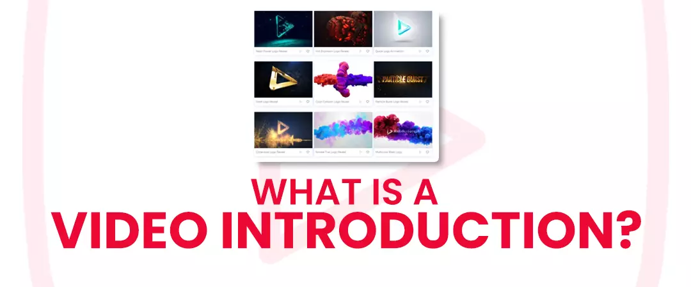
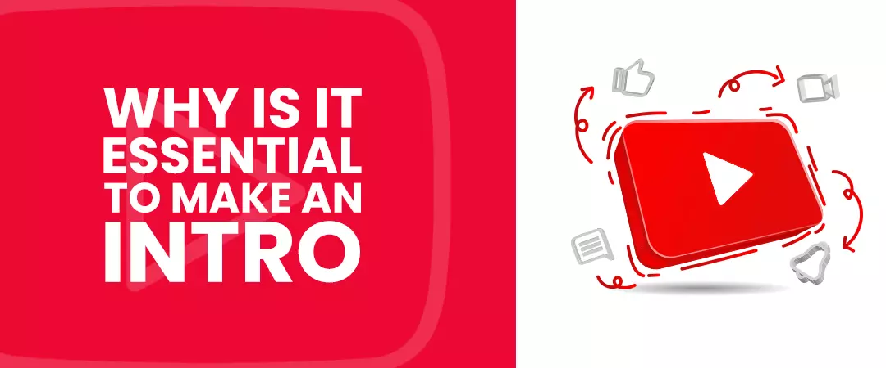
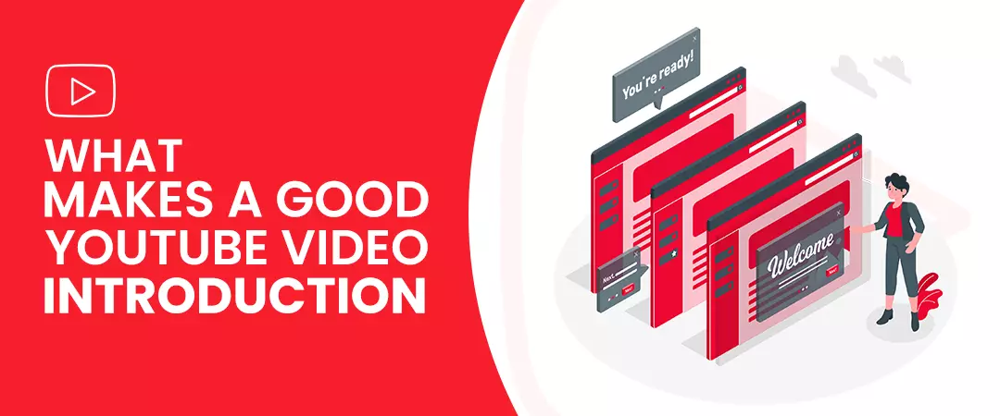
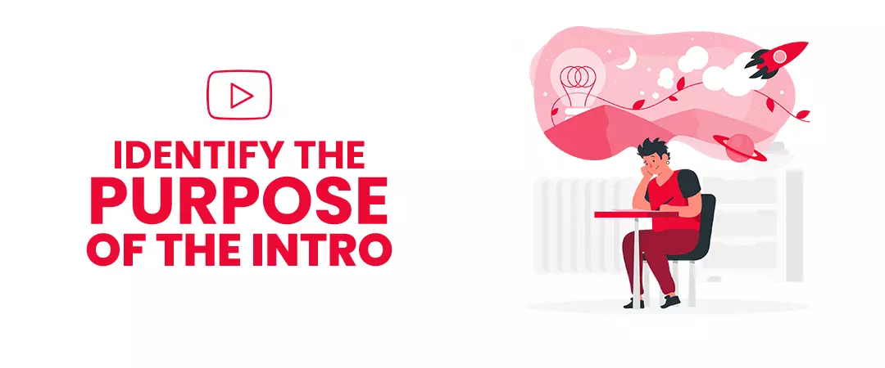
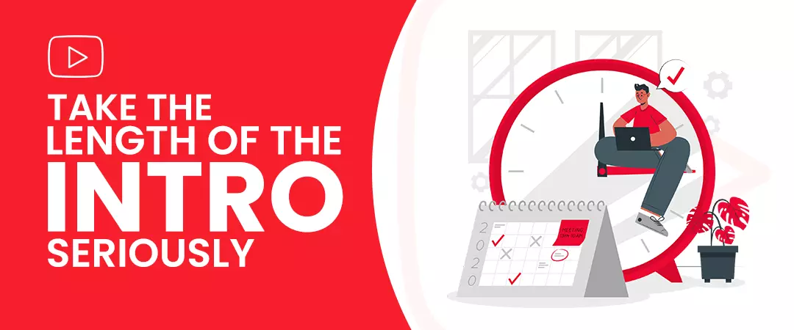
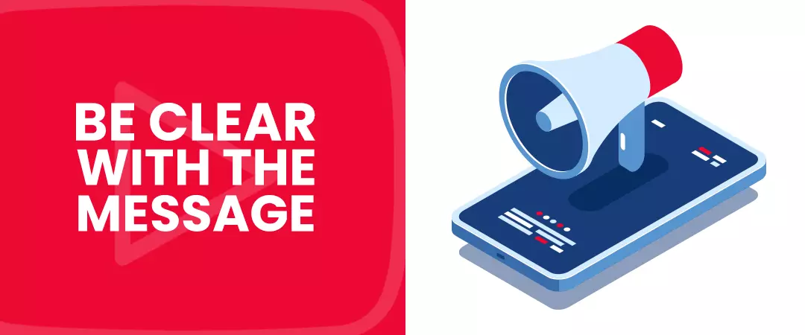
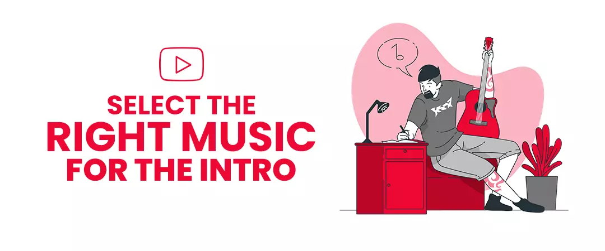
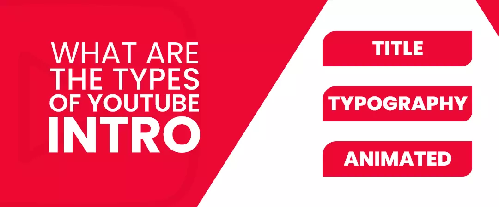

If your title introduces your content to your audience, then your YouTube intro clears a path for your main content to shine. An introduction video is a small clip with eye-catching graphics, music, text, or a verbal message inserted at the start of the video.
As per the study conducted by Cisco, traffic for video is estimated to be 4X higher in 2021 than in 2016. It should not come as a surprise that video assets are essential for the success of a business. Videos can make or break your brand. You could have the most awesome content that ever graced the platform, but all your efforts will be for naught if nobody is interested in watching your videos. Hence your entire video right from the start should be captivating. When I say start, I am pointing to your intro.
It’s no surprise that the video introduction is the most-watched part of your video. According to Vidyard, videos below 90 seconds get an average retention rate of 53%, whereas videos above 30 seconds retained a meagrer 10%.
You can buy organic YouTube subscribers, who are the perfect audience for your video introduction. You can capture their attention and retain them for most of your video duration.
You might be interested in reading: How to maximize Youtube audience retention
If you are looking to create YT introduction videos that will excite your viewers and keep them hooked to your content, then you have arrived at the right place.
Contents
- What is a Video Introduction?
- Why is it essential to make an Introduction to your videos?
- What makes a good YouTube Video Introduction?
- Identify the purpose of your YouTube Intro Video?
- Take the length of your intro seriously
- You should be clear about the message you deliver
- Select the right music
- What are the different types of YouTube Intros?
What is a Video Introduction?

Your YouTube video introduction is the little clip that shows up at the start of most of your YT videos; hence it is the first thing people will see when they play your videos.
The video intro usually consists of a voiceover with text on the screen or subtitles explaining the video; it can also be a screen with the title of your video.
The intro is an excellent opportunity to make an excellent first impression on your audience. You can compare it to an interview, where you walk in front of an interviewer or a panel. The first few seconds are all it takes to shape the perspective of an individual towards you.
If you are a brand, your video introduction is something that can set you apart from other videos on the platform – viewers feel excited about what they can expect from your video. The intro sets the tone for the video.
Why is it essential to make an Introductionto your videos?

If you look hard enough, you can find multiple reasons to convince you to put extra effort into your YouTube video introduction.
Let us look at some of the key pointers:
-
Video intro can arouse expectations in your viewers
The expectations of viewers can rise even before they watch the content. People see the video title, posts about the video on social media, and video duration before clicking the video.
But the above components only do the job of getting a user inside the video; your intro should make sure that he/she watches the video till the end. Hence from the beginning, your introduction must hint about the video content.
-
Video introduction can gain exposure for your brand
A person remembers your channel depending on how you have presented yourself to the user. Your color palette, logo, and name all play a vital role in making your channel recognizable. Apart from the mentioned points, how you showcase the value of your content also matters.
A video content strategist named Salma Jafri used the first 30 seconds to talk about the critical takeaways from the video; she uses the next 8 seconds to play an intro sequence. Purple is the color theme used in all her videos.
-
Your YouTube video introductionshould grab viewer’s attention
People are busy, and they have only limited time to spare to watch your video – they won’t spend a second on content that doesn’t pique their interest. With a poor introduction, even your most interesting video will look dull to the audience.
Your introduction must hook the viewers from the get-go – A good intro should give users a reason not to miss out on watching your content. Fear of missing out (FOMO) should set in as soon as your audience starts watching your video.
You might be interested in reading: How to increase YouTube engagement
What makes a good YouTube Video Introduction?

Your YT intro is not something that you include at the beginning of your video and forget about it forever. Of course, you are free to do so, but it will not benefit you or your viewers.
You need to follow some key pointers to make your introduction stand out from the rest:
-
Identify the purpose of your YouTube Intro Video?

You first need to look at your videos and determine how your intro can appraise your content. Use an intro that aligns well with your channel style. But remember, your introductions should never overshadow your main content.
Once you can narrow in on your purpose, you’ll be able to create introductions that align with your channel and help build a strong connection with your viewers. Your intro can also be proof of showcasing the level of commitment you have for your channel.
At times, even a 3 – second intro with text overlay is enough if it successfully sets the tone for your video, or it can be too simple for your video content.
-
Take the length of your intro seriously

3 - 4 seconds is considered an ideal length for a video introduction; you have the luxury to extend the limit to 20 – 30 seconds. The length of your video should only be as long as you need it to be. It would help if you did not make it longer as your audience came to see the actual content and do not make it too short and miss giving some important details.
A study conducted by Full-screen media revealed that 50% of the total viewers left a video at around the 30-second mark. – This goes to show that the longer the intro goes, the probability of your audience dropping goes up.
Of course, varied lengths work differently for different videos; we suggest you test out the different video introductions to find out the one that works best for your channel or brand. Start with smaller intros and gradually increase the length when the situation demands.
-
You should be clear about the message you deliver

You only have that small 20 – 30 second window to deliver an introduction. Most YouTubers make one common mistake: fill up the slot with unnecessary music or sentences before they begin talking about the video. Viewers become impatient if they do not find anything of value, causing them to drop from the video immediately.
One of the best video introduction examples comes from Dude perfect, a sports channel with 56 million subscribers with one of the most effective introductions on the platform. The first 10 seconds start with light humor hinting at the video content; within the next 5 seconds, they wrap up the intro with a song introducing the members.
-
Select the right music

When you are selecting music for your intro, you are presented with two options:
-
You can have a specific song for all your videos, just like a typical show. Use this option if you want to create more visibility for your channel.
-
Another option is not to use a particular song. Instead, choose the music used in all videos. This option is recommended if you want to keep your intros adaptable and modest.
The option you select will entirely depend on the video type and your audience. A vlogger will probably use a new soundtrack for fresh videos, whereas a theme song is more suited for a tutorial video.
Your intro volume is another aspect you sound carefully consider. A loud sound can startle your viewers watching your video; A best practice would be to maintain the same volume throughout your videos.
-
Make your YouTube IntroVideo easier to understand even without sound
Most of the social platforms automatically play a video in the user's feed, but most of the time, the video plays without sound, users have the option to view the video with sound. But there are times when users find themselves in a situation where they cannot turn on the sound. It is up to you to help them understand with the help of colors, your name, captions, topic, etc.
Whenever a person notices a color pallet that matches with a logo that he/she has witnessed before, they will immediately associate it with your channel or brand.
-
Create a visual identity for your YouTube Intro Video
Once you've understood your purpose, creating a YT intro should be easy as making pie.
You do not have to be a professional graphic designer; you can use YouTube video templates, with a modest photo coupled with your channel's name.
Any experiment is welcome from your side but is mindful not to go overboard; your goal is to introduce your video/channel satisfyingly.
You might be interested in reading: How to increase YouTube watch time
What are the different types of YouTube Intros?

-
Title card
A channel is primarily for vlogging, can create title cards for introductions; one video introduction example that comes to mind is David Dobrik. His intro is a teaser consisting of small clips coupled with a title card. The entire intro is restricted to 5 – 7 seconds. A title card is fixed, and it is made up of the vlog number, date, and a piece of happy music in the backdrop.
-
Typography
Alisha Marie graces us with her perfect 3 – second video. Her intro showcases clips from her videos and some animated text overlay of her name – this has to be one of my favourite video introduction examples. Typographic introductions are delightful and very easy to make.
Though simple, Marie’s intro gets the job done of echoing her brand and style to her viewers amicably.
-
Animated
A comedy channel on YT named called Good Mystical Morning has a massive community of 15.6 million subscribers. But this is not the only amazing aspect of the channel. They keep things fresh with brand new introduction videos for every few seasons – their intros are animated and perfectly sets the tone of all their videos.
I hope you found this as a helpful guide to creating an effective YouTube video intro in 2021.
Feel free to share!